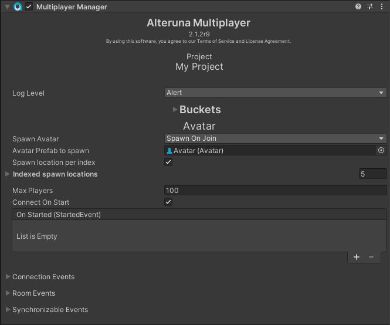

Alteruna Multiplayer Docs
User
Introduces the MultiplayerManager component that is required for Alteruna to work.
Definition
Namespace: Alteruna.Guides
Assembly: Alteruna.Doc (in Alteruna.Doc.dll) Version: 1.0.0+197d965a098acb48958a825b1bb40aa5467dffd7
Assembly: Alteruna.Doc (in Alteruna.Doc.dll) Version: 1.0.0+197d965a098acb48958a825b1bb40aa5467dffd7
C#
public bool Part02MultiplayerComponentField Value
BooleanRemarks
[DocStyle(format=md)]
# What is the MultiplayerManager component?\n
The MultiplayerManager component is what enables a Unity project to become a multiplayer application.\n
In order for your application to work with Alteruna Multiplayer, there must be a MultiplayerManager component\n
in the scene.\n
The component looks like this:\n
 \n
Figure 2.2\n
### Avatar\n
This menu can be used to automatically spawn Avatars to represent each User in a Room.\n
If you enable `Automatically Spawn Avatar` the menu will give you more options like this.\n
\n
Figure 2.2\n
### Avatar\n
This menu can be used to automatically spawn Avatars to represent each User in a Room.\n
If you enable `Automatically Spawn Avatar` the menu will give you more options like this.\n
 \n
Figure 2.3\n
---\n
[← Back](F_Alteruna_Guides_UserGuide_Part01GetAlterunaMultiplayer.htm) | [Next →](F_Alteruna_Guides_UserGuide_Part03UserAndRooms.htm)
\n
Figure 2.3\n
---\n
[← Back](F_Alteruna_Guides_UserGuide_Part01GetAlterunaMultiplayer.htm) | [Next →](F_Alteruna_Guides_UserGuide_Part03UserAndRooms.htm)

\n Figure 2.1\n ## Log Level\n You can choose to decide the severity log level of output from MultiplayerManager.\n The log level defines the lowest level of output you wish to get from the framework\n and acts as a log message filter. Anything with the chosen severity grade and above will pass through\n the filter and get logged in Unity’s console. During development, \n common practice is to keep the log level at Debug. This will effectively force MultiplayerManager to log\n all messages to Unity’s console. During deployment, a severity grade of Error or None is recommended for performance.\n ## Bucket\n ### What is a bucket?\n - A bucket is a list of Users in the Room.\n - A User can only be in one bucket at a time.\n - Network traffic can be regulated separately to separate Buckets by sending data\n to different people at different rates.\n This display shows the current state of all the buckets in the project.\n\n
Figure 2.2\n
### Avatar\n
This menu can be used to automatically spawn Avatars to represent each User in a Room.\n
If you enable `Automatically Spawn Avatar` the menu will give you more options like this.\n
\n
Figure 2.3\n
---\n
[← Back](F_Alteruna_Guides_UserGuide_Part01GetAlterunaMultiplayer.htm) | [Next →](F_Alteruna_Guides_UserGuide_Part03UserAndRooms.htm)